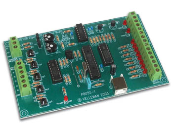

Linux k8055 library
Introduction The base program Set USB permissions Download
|
Introduction
|
|
These files cloned from Sven Lindberg's libk8055 sourceforge project page at version 0.4.1.
This software allows access to Velleman's K8055 card. This software was developed to replace all other half-complete softwares for the
k8055 board under Linux. The library is made from scratch with the same functions as
described in Velleman's DLL usermanual.
The command line tool is developed from Julien Etelain and Edward Nys code.
The reason for writing another driver for Linux was to get the debounce time
to work correctly. Nobody seemed to have figured out how it works (nor did Velleman care to explain)
so I studied it and have it working now with +-4% accuracy of the actual settime. Note that the Velleman's DLL doesn't even get this close.
Another reason was to make it simple to use by writing a library for the k8055,
libk8055. Just by using "#include <k8055.h>" and compiling with "-lk8055" flags
you have access to all the functions described in Velleman's DLL documentation.
The library is now also available in python, thanks to Pjetur G. Hjaltason. Included with the source and some examples as well!
Developer : Sven Lindberg <k8055 @ mrbrain.mine.nu> (python by Pjetur G. Hjaltason <pjetur @ pjetur.net>)
License : GPL Version : 0.4
Note : This project or webpage is not maintained any more (atleast not much).
Links
|

|
The base program
Requirements
|
|
|
Compilation
Library and command line program
|
make all
make install
default install paths are /usr/local/bin, /usr/local/lib, /usr/local/include and /usr/local/man/man1/
If your system doesn't use these paths you can create a file in etc/ld.so.conf.d/ for the libk8055 like this:
echo "/usr/local/lib" > /etc/ld.so.conf.d/k8055.conf and run ldconfig after.
Note that the command line tool, k8055, has a manual page that can be read by invoking man k8055
|
|
Your own program using the k8055 library
|
gcc -Wall -lk8055 main.c
Older than 0.3 version:
gcc -Wall -lusb -lk8055 main.c
This assumes you have all code in main.c, otherwise add necessary link options. Use "#include <k8055.h>"
in the beginning of the C-code to use the k8055 library.
|
Syntax
|
|
The provided command line program offers some options. You can use this program
for script languages or just for controlling stuff by hand.
Syntax : k8055 [-p:(number)] [-d:(value)] [-a1:(value)] [-a2:(value)] [-num:(number) [-delay:(number)]] [-dbt1:(value)] [-dbt2:(value)] [-reset1] [-reset2] [-debug]
- -p:(number) Set board address (0-3)
- -d:(value) Set digital output value (8 bits in decimal)
- -a1:(value) Set analog output 1 value (0-255)
- -a2:(value) Set analog output 2 value (0-255)
- -num:(number) Set number of measurements
- -delay:(number) Set delay between two measurements (in msec)
- -dbt1:(value) Set debounce time for counter 1 (0-7450 in msec)
- -dbt2:(value) Set debounce time for counter 2 (0-7450 in msec)
- -reset1 Reset counter 1
- -reset2 Reset counter 2
- -debug Activate debug mode
Exemple : k8055 -p:1 -d:147 -a1:25 -a2:203
Output : (timestamp);(digital);(analog 1);(analog 2);(counter 1);(counter 2)
Note : timestamp is the number of msec when data is read since program start
Exemple : 499;16;128;230;9;8
- 499 : Measurement done 499 msec after program start
- 16 : Digital input value is 10000 (I5=1, all other are 0)
- 128 : Analog 1 input value is 128
- 230 : Analog 2 input value is 230
- 9 : Counter 1 value is 9
- 8 : Counter 2 value is 8
|
How to control user permissions to a USB-device
|
|
With the new libusb packages, many USB devices are accessed through it and not through a device node in /dev.
Udev can not be used to set permissions for these devices since a /dev node doesn't exist.
This small HOW-TO will help to explain how to allow non-root access to these devices using the events generated by hotplug.
|
Requirements:
|
hotplug and libusb
|
Setup the hotplug
|
All these steps are run as root.
- Make sure usbfs is mounted.
mount
Should list a line like this:
usbfs on /proc/bus/usb type usbfs (rw)
If it's not listed, you have a problem that needs to be fixed first.
Make sure you have script /etc/init.d/localmount running on boot. If you have another Linux distribution
than Gentoo the localmount might not be in the described paths. You can then skip the three following steps and refer to the system manual how init.d is used. To check use (in Gentoo systems):
rc-update -s
If it isn't, add it like this:
rc-update add localmount boot
and start it now.
/etc/init.d/localmount start
- if you use gentoo make sure you have the usbutils package:
emerge usbutils
- Plug in the usb device for which you want to set up permissions.
- Run lsusb and note the vender id and product id for your device.
Here is a sample output of my device in this exampleCode:
Bus 001 Device 007: ID 10cf:5502
The first value after ID is the Vendor ID, and the second value after ID is the Product ID.
- Change to /etc/hotplug/usb/Code:
cd /etc/hotplug/usb/
- We are going to make a usermap file for your device. You can choose any name for the file as long as it ends in .usermap. For my example, I am setting up my Velleman card. Its vender ID is 0x10cf and its product ID is 0x5502. So I created the file k8055.usermap with the following contents:Code:
k8055 0x0003 0x10cf 0x5502 0x0000 0x0000 0x00 0x00 0x00 0x00 0x00 0x00 0x00
The first word, (k8055 in my case), is a program that we make that is called when the device is attached. You can chose any name but I like to keep the same name as the beginning as usermap file.
Leave the second value, (0x0003), but replace the second and third values with your vender ID and product ID.
- Now we are going to create the program that correctly fixes the permissions. Remember to create the file with the name you used as the first word in your .usermap file. (In my case k8055)
Paste the following into the file you just created.
#!/bin/sh
# This file is part of sane-backends.
#
# This script changes the permissions and ownership of a USB device under
# /proc/bus/usb to grant access to this device to users in the k8055 group.
#
# Ownership is set to root:k8055, permissions are set to 0660.
#
# Arguments :
# -----------
# ACTION=[add|remove]
# DEVICE=/proc/bus/usb/BBB/DDD
# TYPE=usb
if [ -z "${DEVICE}" ] ; then
IF=$(echo ${DEVPATH} | sed 's:\(bus/usb/devices/\)\(.*\)-\(.*\):\2:')
if [ -r /sys/${DEVPATH}/devnum ]; then
DEV=$(cat /sys/${DEVPATH}/devnum)
else
DEV=1 # you'll have to adjust this manually for kernel < 2.6.6
fi
DEVICE=$(printf '/proc/bus/usb/%.03d/%.03d' ${IF} ${DEV})
fi
if [ "$ACTION" = "add" -a "$TYPE" = "usb" ]; then
chown root:k8055 "$DEVICE"
chmod 0660 "$DEVICE"
fi
This code is orginally from the sane-backends package.
- These linesCode:
chown root:k8055 "$DEVICE" # set owner=root and group=k8055
chmod 0660 "$DEVICE" # root access=rw, group access=rw
set the owner, group and permissions. Change these as required for your needs.
(For the noobies among you, 660 is common and allows read and write access to root and members of the group)
In my case root is owner and the group is k8055. Both owner and group members have read-write access.
- Make sure this file is executable. In my case:
chmod a+x k8055
- Create the new group to which you will allow access to this device. (Matches the group you set in file above) In my case, k8055:
groupadd k8055
- Now use the gpasswd command to add users to the group you created in /etc/group.
In my example, I am going to add user sven to group k8055:
gpasswd -a sven k8055
- Logout of account. Login again. (Forces changes to group membership to be recognized). You can also try to run "source /etc/profile" but the logout/login is the safest way to do it.
- If you check /proc/bus/usb/... your device should have the owner, group, and permissions you set. If you properly included yourself in the group and gave write access, you should be able to access the device as the user.
This should work with all devices that use libusb and don't use device nodes.
|
Downloads
|
|
|